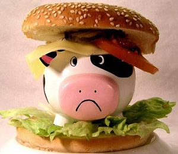

Сравнимо ли убийство растения с убийством животного?
От убеждённых сторонников мясоедения можно порой услышать снисходительное: "Ведь даже употребляя только растительную пищу, вы всё равно совершаете убийство. Какая разница между, скажем, лишением жизни свиньи и цветущего растения?" Отвечаю: "Самая что ни на есть существенная!" Разве картофелина жалобно плачет, когда её выдёргивают из земли, как телёнок, отнимаемый от матери? Разве лист сельдерея визжит, корчась от боли и ужаса, когда его срывают, как свинья, которую ведут на бойню и вспарывают ножом горло? Какую горечь утраты, боль одиночества или муки страха может испытывать пучок салата-латука?
Нам не нужен замысловатый полиграф, чтобы продемонстрировать факт наличия некоей формы сознания у растений. Но не вызывает также сомнений и то, что сознание это присутствует у растений в зачаточной, рудиментарной форме, куда более примитивной, нежели у млекопитающих, с их высокоразвитой нервной системой. Не требуется сложных тестов и для того, чтобы понять, что те же коровы, свиньи, овцы могут испытывать боль не в меньшей степени, чем люди. Кто не видел, как они дрожат и извиваются, корчатся, стонут и плачут, когда их истязают или калечат, как делают они всё возможное, чтобы любой ценой избежать боли!
И если уж на то пошло, то многие фрукты и овощи вообще могут быть собраны без причинения смерти или какого-либо вреда растению. Это включает ягоды, бахчевые культуры, бобовые, орехи, семена, тыквы, кабачки и многие другие виды овощей. Картофель выкапывают из земли, когда само растение уже умерло. Большинство овощных культур – вообще однолетние растения, и сбор урожая совпадает или лишь ненамного предупреждает их естественную смерть.
Существуют также научные данные, свидетельствующие о том, что наши зубы, челюстной аппарат и длинный, витой кишечник НЕ приспособлены для потребления мясной пищи. Так, например, пищеварительный тракт человека в 10-12 раз превышает длину его тела, тогда как у плотоядных, таких как волк, лев или кошка, этот показатель равен трём, что позволяет их пищеварительной системе в кратчайшие сроки избавляться от таких быстро разлагающихся органических продуктов, как мясо, избегая образования токсинов гниения. Помимо этого, желудок плотоядных животных имеет, по сравнению с человеческим, повышенную концентрацию соляной кислоты, что позволяет им легко усваивать тяжелую мясную пищу. Сегодня многие учёные сходятся во мнении, что фрукты, овощи, орехи, семена и злаковые культуры представляются наиболее оптимальной пищей для человеческого организма.
Итак, нам хорошо известно, что без пищи нам долго не протянуть, а вся наша пища состоит из материи, которая так или иначе когда-то была живой. Но поскольку мы можем обходиться без плоти умерщвленных животных и при этом оставаться здоровыми и полными сил, зачем тогда, имея в избытке необходимую для нашего благоденствия растительную пищу, продолжать отнимать жизнь у ни в чём не повинных существ?
Подчас в некоторых кругах не чуждых "духовности" людей бытует странное мнение: "Конечно, мы едим мясо, – заявляют они, – ну и что с того? Важно ведь не то, чем мы наполняем свой желудок, а то, что наполняет наш ум". Хотя и правда, что очищение своего ума от заблуждений и освобождение из эгоистического плена собственного "Я" является весьма благородными целями, но как можем мы надеяться достичь любви и взаимопонимания со всеми живыми существами, продолжая закусывать ими?